<link rel="stylesheet" href="custom.css"> # 技能拾遗 <br> ## Lec04: Git <!--v--> ## 目录 <div style=" font-size: 1.8em; /* 调整所有目录链接的基准字号 */ line-height: 1.8; /* 调整行高，确保文本不拥挤 */ margin-top: 25px; /* 与目录标题之间留些空隙 */ "> <a href="#/1">Part1. Git简介</a><br> <a href="#/2">Part2. Git基础指令</a><br> <a href="#/3">Part3. 远程仓库管理</a><br> <a href="#/4">Part4. 分支管理</a><br> </div> <!--s--> ## Part 1 ## Git简介 <!--v--> ## 集中式版本控制系统 <p align="center">使用非常简单，但致命的缺点是单点故障可能引发整个系统的崩溃</p>  <!--v--> ## 分布式版本控制系统 <p align="center">较为复杂，占用更多的空间；但胜在稳定，支持离线工作、分支管理等强大特性</p>  <!--v--> ## Git安装(Client) <p>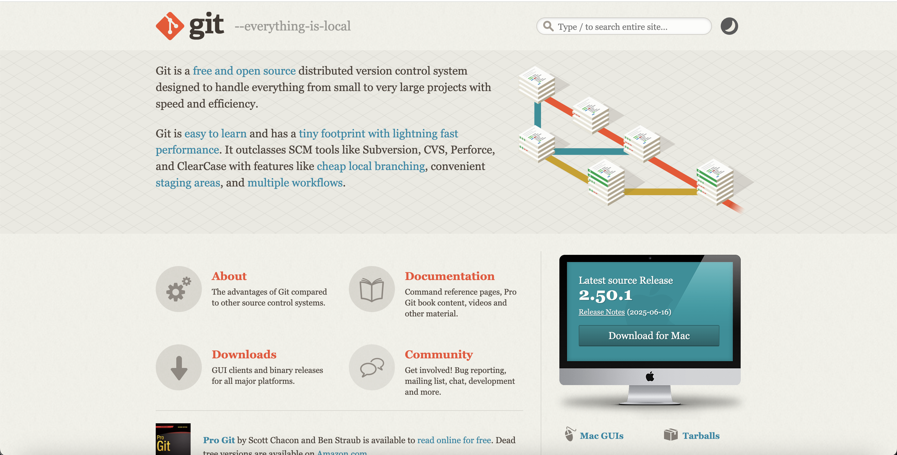</p> <!--v--> ## Git安装(Server) ```sh $ brew install git ``` <p>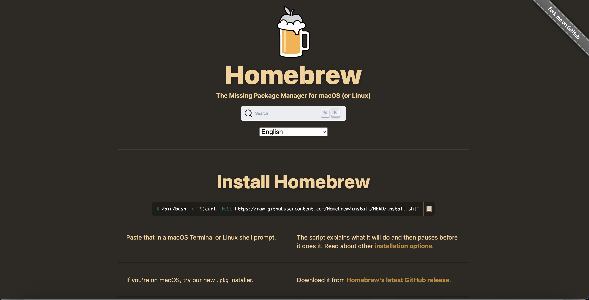</p> <!--v--> ## git初始化配置 <p align="center">设置用户名和邮箱以便让你的协作者知道是谁提交的代码；设置网络代理以便后续能够正常使用<span style="color: orange; font-weight: bold">git clone</span></p> ```shell git config --global user.name "your_name" git config --global user.email "your_email" git config --global http.proxy "http://127.0.0.1:端口号" git config --global https.proxy "https://127.0.0.1:端口号" ``` <!--v--> ## *终端个性化 <!--v--> ## Windows Terminal <img src="./L4_03.png" style="zoom:60%;" /> <!--v--> <img src="./L4_04.png" style="zoom:67%;" /> <!--v-->  <!--v--> ## iTerm2 <p>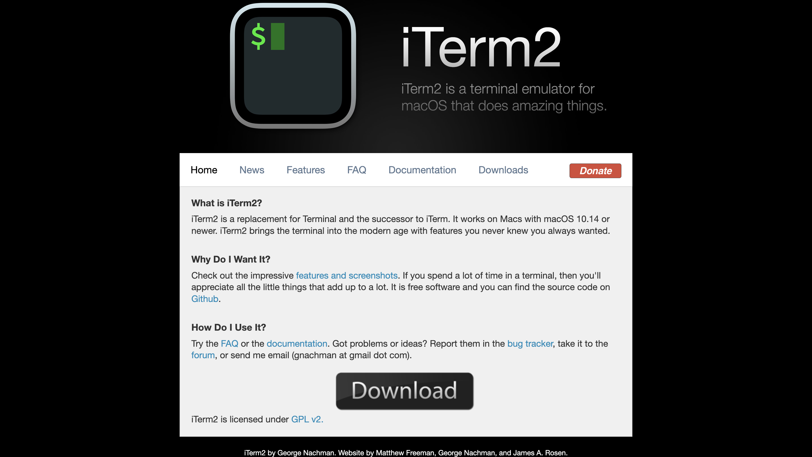</p> <!--v--> <p>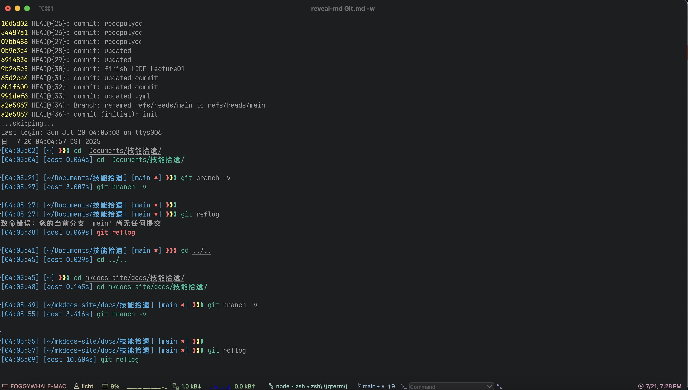</p> <!--v--> ## oh-my-zsh <p>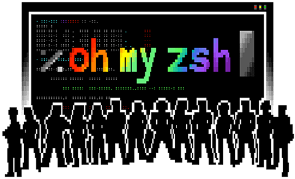</p> <!--s--> ## Part 2 ## Git基础指令 <!--v--> ## 创建仓库 <p align="center">使用<span style="color: orange; font-weight: bold">git init</span>指令，可以在当前目录下创建git仓库</p> <p>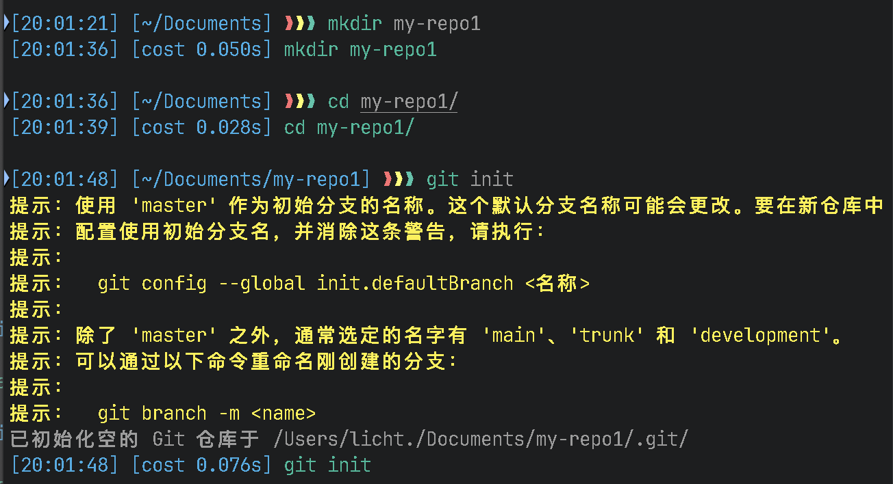</p> <!--v--> ## 创建仓库(cont.) <p align="center">使用<span style="color: orange; font-weight: bold">git init [repo]</span>指令，可以在当前目录下创建[repo]目录，并为其新建git仓库</p>  <!--v--> ## 克隆仓库 <p align="center">使用<span style="color: orange; font-weight: bold">git clone [URL]</span>指令,可以克隆指定web url下的git仓库</p> <p>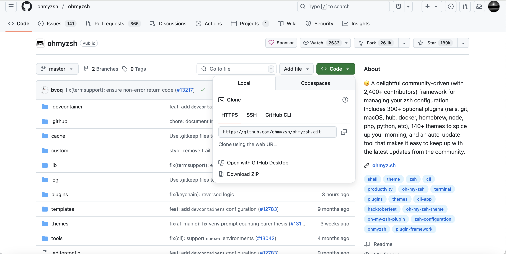</p> <!--v--> ## 文件区域  <!--v--> ## 查看仓库状态 <p align="center">使用<span style="color: orange; font-weight: bold">git status</span>指令，查看当前仓库的状态，显示文件的变更追踪情况</p>  <!--v--> ## 添加文件到暂存区 <p align="center">使用<span style="color: orange; font-weight: bold">git add [filename]</span>指令，将文件添加到暂存区</p>  <!--v--> ## 提交暂存区到本地仓库 <p align="center">使用<span style="color: orange; font-weight: bold">git commit -m "your comment"</span>指令，将暂存区提交至本地仓库中</p>  <!--v--> ## 版本回溯 <p align="center">使用<span style="color: orange; font-weight: bold">git reset [nodeid]</span>指令，可以将本地仓库回滚到指定的git节点</p> --- <span style="color: orange; font-weight: bold">git reset</span>的三种模式 - <span style="color: red; font-weight: bold">soft</span>: 回滚后，不影响工作区和暂存区的状态，仅仅改变了本地仓库的<span style="color: red; font-weight: bold">HEAD</span>指针 - <span style="color: red; font-weight: bold">mixed</span>: 回滚后，不影响工作区的状态，清空暂存区的内容，并用当前git节点的提交内容填充暂存区 - <span style="color: red; font-weight: bold">hard</span>：回滚后，清空工作区和暂存区的内容，并用git节点的提交内容填充工作区和暂存区。这是最具风险的一种reset模式 <!--v--> ## 差异比较 <p align="center">使用<span style="color: orange; font-weight: bold">git diff</span>指令，可以比较不同区域或是不同版本的文件差异</p> --- - <span style="color: orange; font-weight: bold">git diff</span>: 显示已写入暂存区的文件和工作区内相同文件之间的差异 - <span style="color: orange; font-weight: bold">git diff --cached</span>: 显示暂存区和上一次提交的差异 - <span style="color: orange; font-weight: bold">git diff HEAD</span>: 显示工作区与当前git节点的差异 - <span style="color: orange; font-weight: bold">git diff [nodeid]</span>: 显示工作区与指定节点的差异 <!--v--> ## 删除文件 <br> <p align="center">使用<span style="color: orange; font-weight: bold">git rm [filename]</span>指令，可以删除目录中的指定文件，并将其从暂存区移除</p> <br> <p align="center">使用<span style="color: orange; font-weight: bold">git rm [filename] --cached</span>指令，可以将文件从暂存区移除</p> <!--s--> ## Part 3 ## 远程仓库管理 <!--v--> ## SSH配置 <p>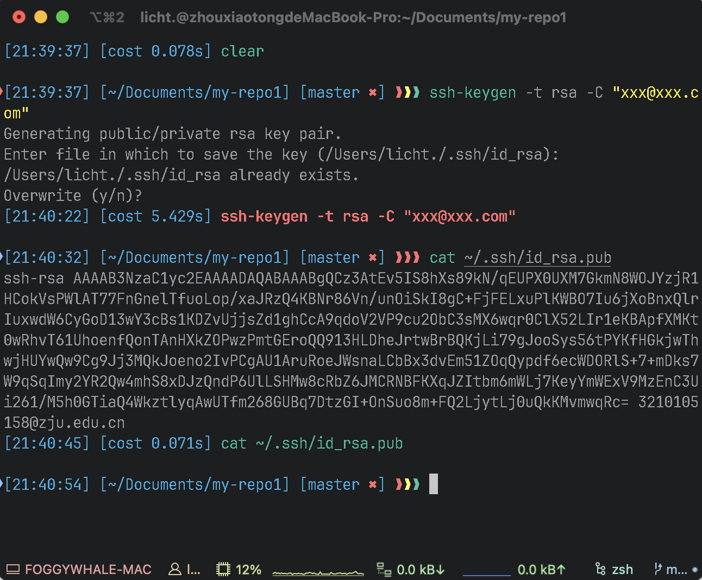</p> <!--v--> ## SSH配置(cont.) <p>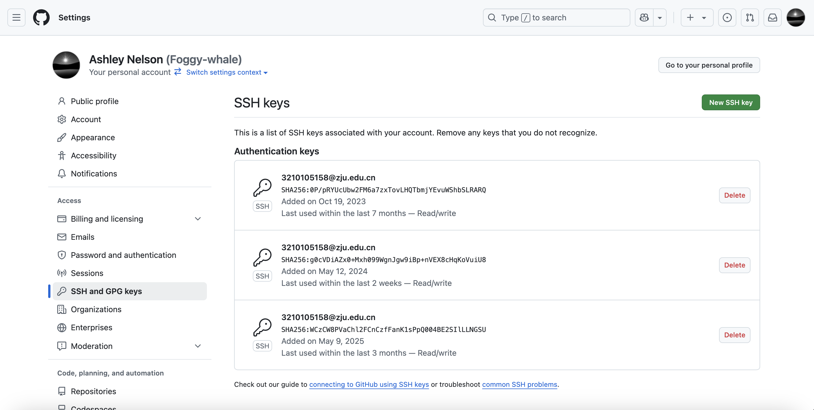</p> <!--v--> ## 创建远程仓库 <p>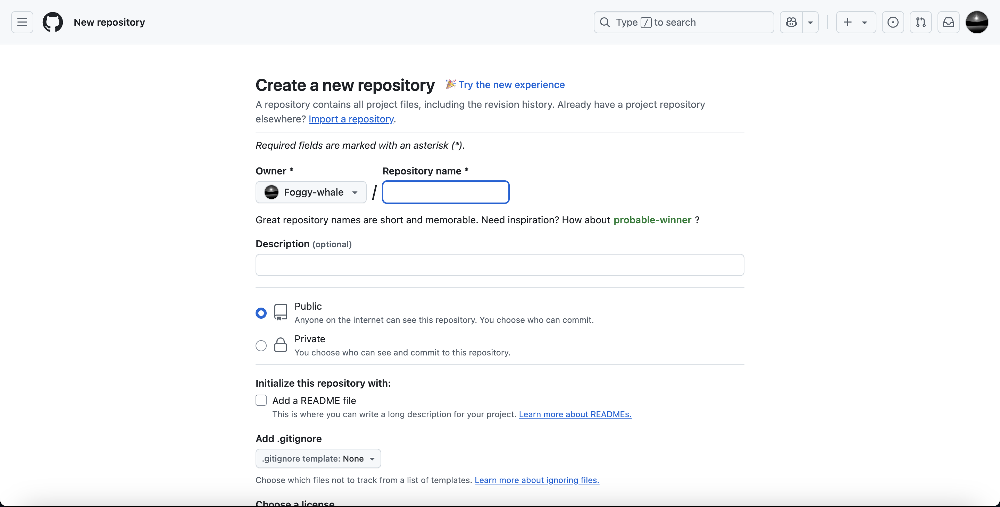</p> <!--v--> ## 创建远程仓库(cont.) <p>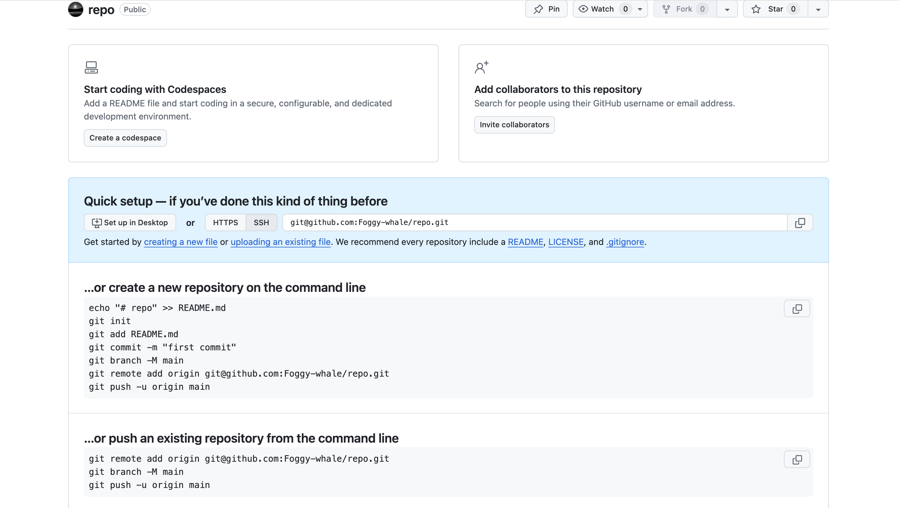</p> <!--v--> ## push操作 - <span style="color: orange; font-weight: bold">git push origin main</span>：将本地 main 分支的更改推送到名为 origin 的远程仓库的 main 分支。 - <span style="color: orange; font-weight: bold">git push -u origin feature-branch</span>：首次推送 feature-branch 到 origin，并建立本地 feature-branch 追踪 origin/feature-branch 的关系。 - <span style="color: orange; font-weight: bold">git push</span>：如果本地分支已经设置了上游追踪分支，则直接将更改推送到该上游分支 - <span style="color: orange; font-weight: bold">git push --force</span> 或 <span style="color: orange; font-weight: bold">git push -f</span>：强制推送。**慎用！** 会覆盖远程仓库上的历史。 <!--v--> ## pull操作 - <span style="color: orange; font-weight: bold">git pull origin main</span>：从 origin 远程仓库拉取 main 分支的更改，并合并到当前本地分支。 - <span style="color: orange; font-weight: bold">git pull</span>：如果当前本地分支已经设置了上游追踪分支，则自动从该上游分支拉取并合并。 <!--v--> ## fetch操作 <br> - <span style="color: orange; font-weight: bold">git fetch origin</span>：从名为 origin 的远程仓库获取所有最新信息。 - <span style="color: orange; font-weight: bold">git fetch origin main</span>：只获取 origin 仓库的 main 分支的最新信息。 - <span style="color: orange; font-weight: bold">git fetch --all</span>：获取所有远程仓库的最新信息。 <!--s--> ## Part 4 ## 分支管理 <!--v--> ## 参考网站 <p align="center">https://learngitbranching.js.org/</p> <p>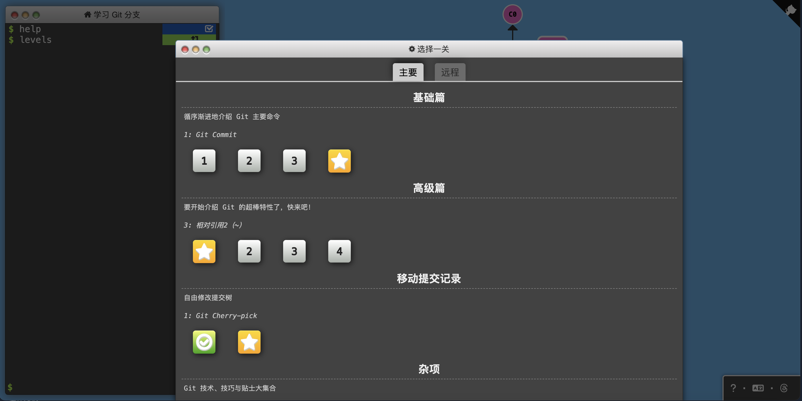</p>